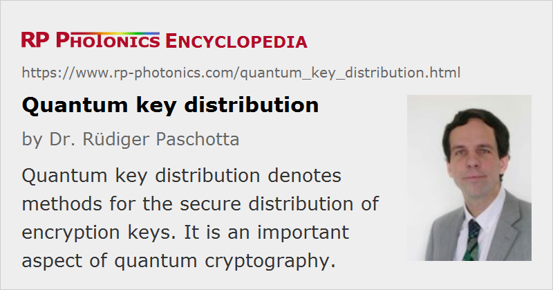

Quantum Key Distribution
Definition: methods for the secure distribution of encryption keys
German: Quanten-Schlüsselverteilung
Categories: quantum optics, methods
How to cite the article; suggest additional literature
Author: Dr. Rüdiger Paschotta
Quantum key distribution is a technique used in the context of quantum cryptography in order to generate a perfectly random key which is shared by a sender and a recipient while making sure that nobody else has a chance to learn about the key, e.g. by intercepting the communication channel used during the process. Basic principles of quantum mechanics are exploited to ensure that. Only if quantum mechanics were to turn out to be a flawed theory (for which there is no reasonable evidence after decades of intense research), it might be possible to break the security of such a communication system.
The best known and popular scheme of quantum key distribution is based on the Bennet–Brassard protocol (in short: BB84), which was invented in 1984 [1]. It relies on the no-cloning theorem [3, 4] for non-orthogonal quantum states. For example, it can be implemented using polarization states of single photons. Briefly, the Bennet–Brassard protocol works as follows:
- The sender (usually called Alice) sends out a sequence of single photons. For each photon, it randomly chooses one of two possible base states, with one of them having the possible polarization directions up/down and left/right, and the other one polarization directions which are tilted by 45°. In each case, the actual polarization direction is also randomly chosen.
- The receiver (called Bob) detects the polarizations of the incoming photons, also randomly choosing the base states. This means that on average half of the photons will be measured with the “wrong” base states, i.e. with states not corresponding to those of the sender.
- Later, Alice and Bob use a public (possibly interceptable) communication channel to talk about the states used for each photon (but not on the chosen polarization directions). In this way, they can find out which of the photons were by chance treated with the same base states on both sides.
- They then discard all photons with a “wrong” basis, and the others represent a sequence of bits which should be identical for Alice and Bob and should be known only to them, provided that the transmission has not been manipulated by anybody. Whether or not this happened they can test by comparing some number of the obtained bits via the public information channel. If these bits agree, they know that the other ones are also correct and can finally be used for the actual data transmission.
A possible eavesdropper (called Eve) would have to detect the photons' polarization directions without knowing the corresponding base states. In those cases where Eve's guess concerning the base states is wrong, Eve obtains random results. If Eve sends out photons with these polarization directions, Bob's results will also be random in cases where Bob's guess was right. This will therefore be detected during the last stage (the bit verification). Quantum mechanics would not allow Eve to do a polarization measurement without projecting the photon state onto the chosen base states, i.e., without altering the photon states.
Note that Alice and Bob actually need to carry out secure authentication in order to prevent an interceptor from manipulating their public communications. This also requires some secret key, which at a first glance would seem to lead to a catch-22 situation: you need a secret key in order to generate another secret key. However, authentication requires only a short key, whereas the quantum key distribution scheme can generate a much longer one and is therefore still useful.
Some remaining problems are:
- Ideally, a perfect single photon source should be used for the sender, but this is difficult to realize. Using strongly attenuated laser pulses which have only the order of one photon per pulse generates some risk that pulses which by chance have more than one photon can be used by Eve to gain some information. However, there are some schemes of privacy amplification to destroy this possible knowledge of Eve at the cost of reducing the number of obtained bits for the key.
- Losses in the transmission channel (e.g. an optical fiber) reduce the degree of the required quantum correlations and also create chances for an eavesdropper. However, there are also refinements of the technique (quantum error correction) to deal with this issue, provided that the losses are low enough (at most a few percent of the photons).
- The bit rate with which a key is generated is normally fairly low, particularly for large transmission distances. This accordingly limits the bit rate of secure communications.
A modified cryptography scheme was suggested in 1991 by Ekert [2]. Here, entangled states are used instead of the randomly chosen measurement basis. In many respects, this protocol is similar to the BB84 protocol.
Some quantum key distribution systems have been demonstrated which promise unconditional security for transmission distances up to a few tens of kilometers, although at least one system has been proven not to be perfectly secure; successful eavesdropping has been demonstrated [10]. It should be possible, however, to eliminate such security loopholes with more careful implementations. Further system refinements should also allow for transmission distances over 100 km. Research is also directed at developing more practical single-photon and correlated photon pair sources, based on, e.g., spontaneous parametric downconversion in χ(2) crystals or spontaneous four-wave mixing in optical fibers.
There are already some commercial quantum key distribution systems which can be used by banks, for example.
Suppliers
The RP Photonics Buyer's Guide contains 3 suppliers for quantum key distribution systems.
Questions and Comments from Users
Here you can submit questions and comments. As far as they get accepted by the author, they will appear above this paragraph together with the author’s answer. The author will decide on acceptance based on certain criteria. Essentially, the issue must be of sufficiently broad interest.
Please do not enter personal data here; we would otherwise delete it soon. (See also our privacy declaration.) If you wish to receive personal feedback or consultancy from the author, please contact him e.g. via e-mail.
By submitting the information, you give your consent to the potential publication of your inputs on our website according to our rules. (If you later retract your consent, we will delete those inputs.) As your inputs are first reviewed by the author, they may be published with some delay.
Bibliography
| [1] | C. H. Bennet and G. Brassard, “Quantum Cryptography: Public key distribution and coin tossing”, in Proceedings of the IEEE International Conference on Computers, Systems, and Signal Processing, Bangalore, p. 175 (1984) (Bennet–Brassard protocol) |
| [2] | A. Ekert, “Quantum cryptography based on Bell´s theorem”, Phys. Rev. Lett. 67 (6), 661 (1991), doi:10.1103/PhysRevLett.67.661 |
| [3] | W. K. Wooters and W. H. Zurek, “A single quantum cannot be cloned”, Nature 299, 802 (1982) (no-cloning theorem), doi:10.1038/299802a0 |
| [4] | N. J. Cerf and J. Fiurasek, “Optical quantum cloning – a review”, Prog. Opt. 49, 455 (2006) |
| [5] | A. Tanaka et al., “Ultra fast quantum key distribution over a 97 km installed telecom fiber with wavelength division multiplexing clock synchronization”, Opt. Express 16 (15), 11354 (2008), doi:10.1364/OE.16.011354 |
| [6] | C. Erven et al., “Entangled quantum key distribution over two free-space optical links”, Opt. Express 16 (21), 16840 (2008), doi:10.1364/OE.16.016840 |
| [7] | A. R. Dixon et al., “Gigahertz decoy quantum key distribution with 1 Mbit/s secure key rate”, Opt. Express 16 (23), 18790 (2008), doi:10.1364/OE.16.018790 |
| [8] | C. Bonato et al., “Feasibility of satellite quantum key distribution”, New J. Phys. 11, 045017 (2009), doi:10.1088/1367-2630/11/4/045017 |
| [9] | D. Stucki et al., “High rate, long-distance quantum key distribution over 250 km of ultra low loss fibres”, New J. Phys. 11, 075003 (2009), doi:10.1088/1367-2630/11/7/075003 |
| [10] | I. Gerhardt et al., “Full-field implementation of a perfect eavesdropper on a quantum cryptography system”, Nature Commun. 2, 349 (2011), DOI: 10.1038/ncomms1348, doi:10.1038/ncomms1348 |
| [11] | H-K. Lo, M. Curty and K. Tamaki, “Secure quantum key distribution” (review paper), Nature Photon. 8, 595 (2014), doi:10.1038/nphoton.2014.149 |
| [12] | Q. Zhang et al., “Large scale quantum key distribution: challenges and solutions”, Opt. Express 26 (18), 24260 (2018), doi:10.1364/OE.26.024260 |
See also: quantum cryptography, optical data transmission
and other articles in the categories quantum optics, methods
|  |
If you like this page, please share the link with your friends and colleagues, e.g. via social media:
These sharing buttons are implemented in a privacy-friendly way!